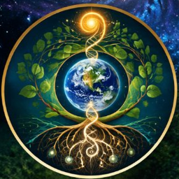

Our creative project
I Am Soil Stories
Through a guided virtual journey, participants are invited to imagine experiencing the world from the perspective of soil.
They can then respond through words, visual art, music, movement or other forms of creative expression. These individual responses can become part of a growing Global Gallery celebrating our interconnectedness with the Earth.
The experience combines imagination with accessible soil education, opening conversations about soil, food, nature and human wellbeing.

From the Earth through creativity back to connection